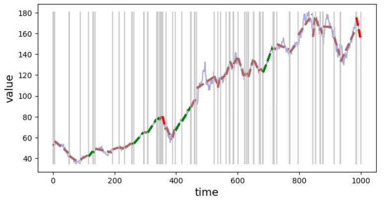

2022-09-12
Automated signal segmentation, trend detection, and classification
This post presents the trend-classifier package that can be used for signal segmentation into parts where the trend is coherent.

Problem statement
- Partition time series into segments, where the signal in the segment has a consistent trend (e.g. up-trend, down-trend)
- Characterise trend in the segment, e.g. provide coefficients of the equation describing the trend in the segment.
Windowing Approach
The discussed solution is based on the concept of analyzing signals using a sliding window with a fixed length. The consecutive windows can overlap.
 Figure 1. Windowing approach for trend detection - trend line fit to datapoints in each overlapping window.
Figure 1. Windowing approach for trend detection - trend line fit to datapoints in each overlapping window.
For each window perform linear regression to find the line that best fits the signal. If the parameters of a linear regression between two windows do not differ too much, the signal covered by these two windows is considered as belonging to the same segment with a coherent trend.
Example
Let's say, we wanted to do segmentation of the time series on segments with similar trends. For that task, you can use trend-classifier Python library. It is pip installable (pip3 install trend-classifier).
Here is an example that gets the time series data from YahooFinance and performs the analysis.
import yfinance as yf
from trend_classifier import Segmenter
# download the data from yahoo finance
df = yf.download("AAPL", start="2018-09-15", end="2022-09-05", interval="1d", progress=False)
x_in = list(range(0, len(df.index.tolist()), 1))
y_in = df["Adj Close"].tolist()
seg = Segmenter(x_in, y_in, n=20)
seg.calculate_segments()
Now, you can plot the time series with trend lines and segment boundaries with:
seg.plot_segments()
 Figure 2. Visualization of the signal segmentation based on the trend.
Figure 2. Visualization of the signal segmentation based on the trend.
You can inspect details about each segment (e.g. positive value for slope indicates an up-trend and a negative down-trend). To see info about the segment with index 3:
from devtools import debug
debug(seg.segments[3])
You can have information about all segments in tabular form using Segmenter.segments.to_dataframe() method which produces Pandas DataFrame.
seg.segments.to_dataframe()
Controlling generalization
There is a parameter that controls the "generalization" factor, i.e. you can try to fit a trend line to a smaller range of time series - you will end up with a large number of segments, or you can go for the segments spanning a bigger part of the time series (more general trend line) and end up with a time series divided into fewer segments. To control that behavior, when initializing Segmenter() (e.g. Segmenter(x_in, y_in, n=20) use various values for n parameter. The larger n the generalization is stronger (fewer segments).
 Figure 3. Signal segmentation with fine granularity (weak generalization), n=20.
 Figure 4. Signal segmentation with rough granularity (strong generalization), n=80.
Figure 4. Signal segmentation with rough granularity (strong generalization), n=80.
An exemplary application of trend detection and segmentation
This tool can be used to extract parts of the signal where the trend has given parameters. E.g. extract segments with: - up-trend - down-trend - the signal is in a horizontal channel
We can write a very basic classifier based on the slope parameter. If the slope is positive, or higher than the threshold value, consider this segment with an up-trend. There are also separate rules for down-trend and horizontal-trend types.
def segment_classifier(segment, th=0.1):
if segment.slope > th:
return "up"
elif segment.slope < -th:
return "down"
else:
return "horiz"
Next, we can use this function to get indices of trends in a given type, and plot them.
up_idx = [seg.segments.index(s) for s in seg.segments if segment_classifier(s) == "up"]
down_idx = [seg.segments.index(s) for s in seg.segments if segment_classifier(s) == "down"]
horiz_idx = [seg.segments.index(s) for s in seg.segments if segment_classifier(s) == "horiz"]
seg.plot_segment(up_idx)
 Figure 5. Segments classified as "up-trend".
Figure 5. Segments classified as "up-trend".
seg.plot_segment(down_idx)
 Figure 6. Segments classified as "down-trend".
Figure 6. Segments classified as "down-trend".
seg.plot_segment(horiz_idx)
 Figure 7. Segments classified as "horizontal-trend".
Figure 7. Segments classified as "horizontal-trend".
The classification function used in the example was very simple and one can implement a more robust function e.g. one, that uses other than slope data stored in the segment object.
Summary
This article describes the trend-classifier library that is using the calculation of linear regression within the overlapping windows for signal segmentation. If the parameters of the regression for the following windows are similar, then the windows are considered as belonging to the same trend and the segment is extended by the newly analyzed window and the operation is continued for the next windows. When using this tool you need to know the limitations:
- there is a trade-off between the efficiency (best fit) and the generalization (number of segments) - the smaller window size (parameter n of the Segmenter()) the better fit but also more resulting segments and less generalization.
- arbitrary (but configurable) threshold values are used to determine if the window is a continuation of the trend from the previous window or if it should be a new segment with a different trend)
- since the criterion for starting a new segment is a "significant" difference between two consecutive windows, one can imagine that if the trend is changing slowly, with small changes e.g. uptrend can change to downtrend, and no trend change will be detected.
Any comments or suggestions? Let me know.
To cite this article:
@article{Saf2022Automated,
author = {Krystian Safjan},
title = {Automated signal segmentation, trend detection, and classification},
journal = {Krystian's Safjan Blog},
year = {2022},
}
Tags:
trend
segmentation
algotrading